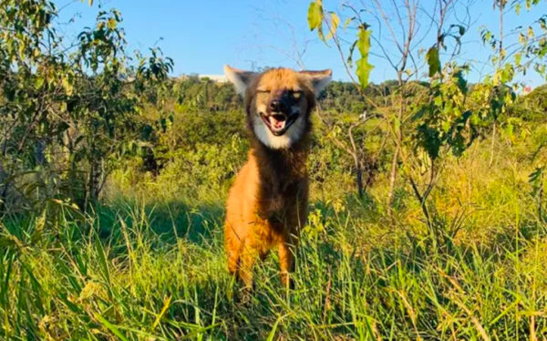

Lobo-guará

O lobo-guará (nome científico: Chrysocyon brachyurus), também chamado guará, aguará, aguaraçu, lobo-de-crina,
lobo-de-juba e lobo-vermelho, é uma espécie de canídeo endêmico da América do Sul e único integrante do gênero
Chrysocyon. Provavelmente, a espécie vivente mais próxima é o cachorro-vinagre (Speothos venaticus). Ocorre em
savanas e áreas abertas no centro do Brasil, Paraguai, Argentina e Bolívia, sendo um animal típico do Cerrado.
Foi extinto em parte de sua ocorrência ao sul, mas ainda deve ocorrer no Uruguai. No dia 29 de julho de 2020 o
lobo-guará foi escolhido para simbolizar a cédula de duzentos reais.
wikipedia